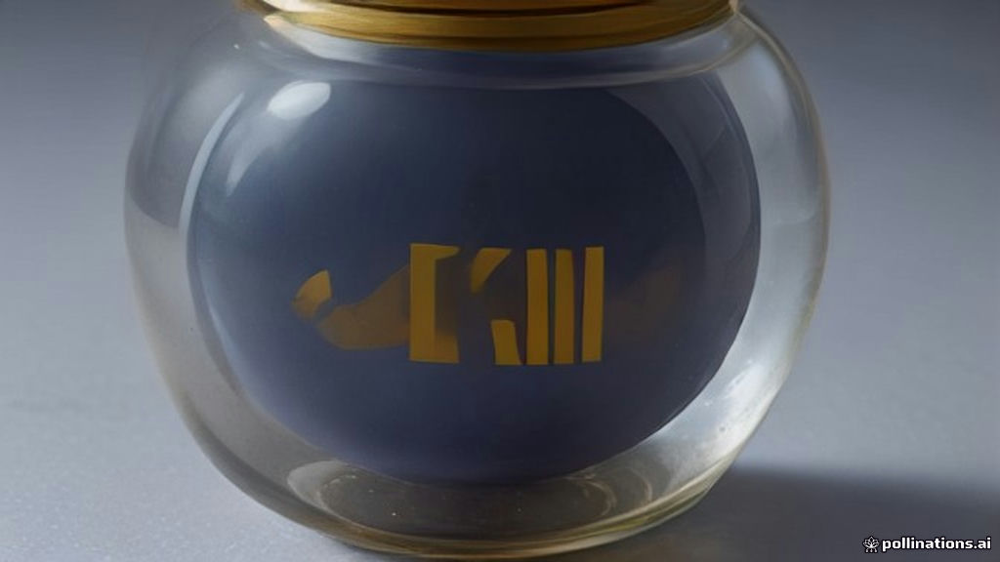
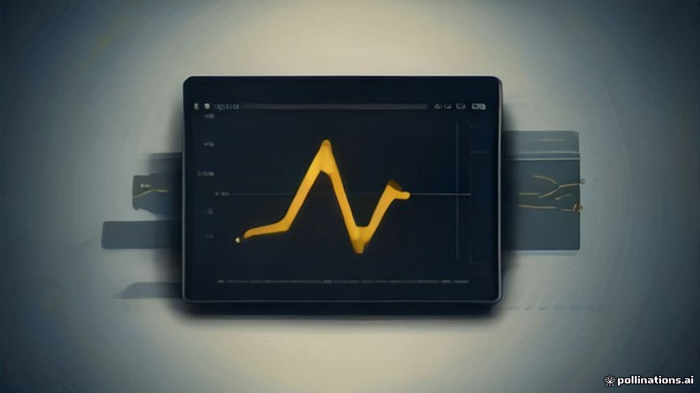

Latest insights
Personal-finance explainers, market briefs, F&O positioning and business stories — all in one place.
Your New Job Opportunities Just Got a Global Boost: Understanding Foreign Direct Investment
Foreign Direct Investment (FDI) is when a company or person from one country invests directly in a business or project in another. This often means building n.
IPO Report Card: 30 to 60 Days After Listing — November 2026
Many companies that listed 30 to 60 days ago are currently trading above their initial public offering (IPO) price. Several companies are also trading below t.
South Korea's Market Measures: Calming Investor Jitters
South Korea's finance minister has announced a series of market stabilization measures to address recent volatility. These steps are designed to restore inves.
DSP Pension Fund NPS Review: Returns, Portfolio & Fees (2026)
DSP Pension Fund is a relatively new player among the National Pension System (NPS) fund managers. As of early 2026, it has shown lower 1-year equity returns .

Pre-Market Brief — 23 November 2026
Global markets ended last week on a cautious note, with US tech indices seeing significant declines, while Asian markets were mixed this morning. GIFT Nifty i.

Upcoming IPOs, Explained Simply — November 2026
This week, we see Mahanadi Coalfields Limited and Watrana Rentals Limited IPOs closing today. Shree Siddhivinayak Greentech Industries Limited and Foodlink F&.
Your Savings Account Just Got a Quarterly Check-up: Understanding Small Savings Rates
The Indian government is soon expected to review interest rates for popular small savings schemes for January-March 2027. These schemes, like PPF, Sukanya Sam.
Direct vs. Regular Mutual Funds: SEBI's New Default Plan Rule
Regular mutual fund plans typically include a commission for distributors, leading to higher expense ratios. Direct mutual fund plans do not involve distribut.
Income Tax Rules: Capital Gains on US Entity Transfer Not Taxable in India
The Delhi Income Tax Appellate Tribunal (ITAT) has ruled that capital gains from the transfer of a US entity by an Irish company are not taxable in India. Thi.
Hospital Stocks Rally: Should You Invest Now?
Hospital stocks like Max Healthcare, Fortis, Apollo, and Aster DM Quality Care recently saw rallies of up to 14% over five trading sessions. This surge is att.
Beyond Shares: Understanding Futures and Options in Our Market
Futures and Options (F&O) are financial contracts whose value comes from another asset, like a share or a stock index. They let you agree to buy or sell somet.
RBI Clarifies FEMA Export Rules: Who Needs to File EDF?
The Reserve Bank of India (RBI) has recently clarified requirements for filing Export Declaration Forms (EDF) under the Foreign Exchange Management Act (FEMA).
Should You Wait for a Market Fall Before Starting a Mutual Fund SIP?
Waiting for a market correction before starting a Systematic Investment Plan (SIP) in mutual funds often leads to lower overall wealth creation. Historical da.
Nasdaq 100 & S&P 500 Correction: What Tech Selloff Means
The Nasdaq 100 index experienced its most significant weekly decline since March 2020, falling by 5.6%. The S&P 500 also entered correction territory, registe.
India's Chief Economic Advisor Sees a Stronger Rupee Ahead: What It Means for You
India's Chief Economic Advisor (CEA), Dr. V. Anantha Nageswaran, recently suggested that India might need to manage a stronger rupee in the financial year 202.
Bank Holiday in Dehradun: Understanding Igas-Bagwal Closures
Bank branches in Dehradun and other parts of Uttarakhand may be closed on specific regional holidays like Igas-Bagwal. The Reserve Bank of India (RBI) publish.
8th Pay Commission: Understanding the ₹45,000 Pension Demand
The Bharat Pensioners Samaj has formally demanded a minimum monthly pension of ₹45,000 for central government retirees under the upcoming 8th Pay Commission. .

Market Wrap — 20 November 2026
Indian markets displayed resilience, extending their winning streak despite negative global cues. Strong inflows from Foreign Institutional Investors (FIIs) w.

Pre-Market Brief — 20 November 2026
Global markets saw a broad-based sell-off overnight, with US and Asian indices declining sharply. GIFT Nifty is signalling a positive start for Indian markets.

High Dividends, Thin Profits: A Deeper Look for Indian Investors
Some Indian companies are paying dividends that exceed their net profits, leading to payout ratios above 100%. For instance, IL&FS Investment Managers, CyberT.
India F&O Pulse — 20 Nov 2026: what the day's options & futures positioning is whispering
End-of-day reading of India's F&O open interest, PCR, max pain and FII positioning — explained simply.
Your Chance to Own a Piece of India's Coal Giant: Mahanadi Coalfields IPO Explained
Mahanadi Coalfields, a big government-owned coal company, has launched its Initial Public Offering (IPO). You can apply for shares between November 19 and Nov.
Direct vs Regular Mutual Funds: Understanding SEBI's Default Rule
Regular mutual funds include distributor commissions, leading to higher annual expense ratios. Direct mutual funds allow you to invest directly with the Asset.
EPFO CBT Meeting: Key Discussions on EPS & Retirement Withdrawals
The Employees' Provident Fund Organisation's Central Board of Trustees (CBT) is convening today, November 19, 2026, in New Delhi. A primary item on the agenda.
Market Wrap — 19 November 2026
Indian markets saw significant foreign institutional investor (FII) interest, with net inflows of ₹5,867 crore. This strong FII buying was a key factor, poten.
Pre-Market Brief — 19 November 2026
Global markets presented a mixed picture overnight, with US tech showing strength while broader indices faced pressure. GIFT Nifty is signalling a strong posi.

Understanding BLS Polymers' Q2 FY27 Results and Stock Performance
BLS Polymers reported robust financial results for Q2 FY27, with revenue increasing by 28.92% year-on-year to ₹125.56 crore. The company's profit after tax (P.
India F&O Pulse — 19 Nov 2026: what the day's options & futures positioning is whispering
End-of-day reading of India's F&O open interest, PCR, max pain and FII positioning — explained simply.

Your Fertiliser Bill Just Got a Helping Hand: Understanding the Rabi Subsidy
The government has approved a ₹62,370 crore subsidy for phosphatic and potassic (P&K) fertilisers for the upcoming Rabi cropping season. This subsidy helps re.
Liberalised Remittance Scheme: Navigating RBI Curbs & Remittance Strategy
The Liberalised Remittance Scheme (LRS) allows resident Indians to send up to USD 250,000 abroad per financial year for various purposes. Recent market specul.
Nifty 100 Streak Ends: Your SIP Strategy for 2026 Volatility
The Nifty 100's decade-long winning streak may conclude in 2026, signalling potential market volatility ahead. Instead of panicking, investors should view mar.

Market Wrap — 18 November 2026
Indian equity benchmarks saw a decline today, primarily driven by weak global cues and profit booking. The biggest factor influencing the market was a cautiou.

Pre-Market Brief — 18 November 2026
Global markets ended mixed, with US indices closing lower while Asian markets showed a mixed trend. GIFT Nifty signals a cautious to negative open for Indian .
IRFC Share Price: Decoding its 5-Year Potential
IRFC is the dedicated financing arm for Indian Railways, funding rolling stock and infrastructure projects. The company recently reported a 10.21% year-on-yea.
India F&O Pulse — 18 Nov 2026: what the day's options & futures positioning is whispering
End-of-day reading of India's F&O open interest, PCR, max pain and FII positioning — explained simply.

Your Rupee Just Got Stronger: What the Dollar Exchange Rate Means for You
The Indian Rupee has recently gained strength against the US Dollar, trading around ₹93.63 today, November 17, 2026. This means you need fewer rupees to buy o.
Gold & Silver Prices Near Lows: Should You Buy Now?
Gold and silver prices are currently trading near multi-year lows, making them relatively cheaper for Indian buyers. A robust US dollar, driven by expectation.
LTCG Tax Tweaks: What Budget 2027-28 Might Bring
The government is reportedly considering adjustments to the Long-Term Capital Gains (LTCG) tax framework as Budget 2027-28 approaches. This evaluation include.
Market Wrap — 17 November 2026
Indian benchmark indices, Nifty 50 and Bank Nifty, closed higher today, extending their positive run. Strong FII buying, coupled with a rally in Indian bonds .

Pre-Market Brief — 17 November 2026
Global markets closed significantly lower overnight, with US indices down over 1.4% and Asian markets following suit. GIFT Nifty is signalling a mildly positi.
Sectoral Mutual Funds: Risks, Returns, and Key Considerations
Sectoral mutual funds invest exclusively in companies belonging to a specific industry or sector, such as IT, pharmaceuticals, or banking. While they offer th.
India F&O Pulse — 17 Nov 2026: what the day's options & futures positioning is whispering
End-of-day reading of India's F&O open interest, PCR, max pain and FII positioning — explained simply.

Getting Money Out of Your Pension Account Just Got Easier: Understanding NPS Partial Withdrawals
The Pension Fund Regulatory and Development Authority (PFRDA) has simplified rules for taking out some money from your NPS account. You can now make partial w.
IPO Report Card: 30 to 60 Days After Listing — November 2026
This report covers 60 IPOs that listed between 30 and 60 days ago. Out of these, 16 companies are currently trading above their original IPO price.
Direct vs Regular Mutual Funds: What Changes Under SEBI's New Default Plan Focus?
Direct mutual fund plans offer lower costs because they do not include distributor commissions, leading to a higher Total Expense Ratio (TER) in regular plans.
Building Your ₹1 Crore Corpus: How Long Will It Take?
Reaching a ₹1 crore corpus through Systematic Investment Plans (SIPs) depends heavily on your monthly investment amount and the assumed rate of return. A ₹10,.
Market Wrap — 16 November 2026
Indian benchmark indices, Nifty 50 and Bank Nifty, closed higher, while broader markets saw profit booking. Strong FII buying was a key driver for the main in.

Hitachi Energy's Growth Outlook: Have Valuations Run Ahead?
Hitachi Energy India reported strong Q2 FY27 results with significant growth in revenue and profit. The company's revenue surged by 63.5% year-on-year to ₹2,9.
Upcoming IPOs, Explained Simply — November 2026
Crystal Crop Protection Limited's IPO is opening this week. Learn what an IPO is and why companies offer them.
India F&O Pulse — 16 Nov 2026: what the day's options & futures positioning is whispering
End-of-day reading of India's F&O open interest, PCR, max pain and FII positioning — explained simply.